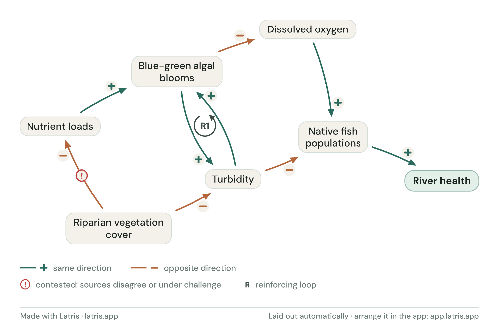
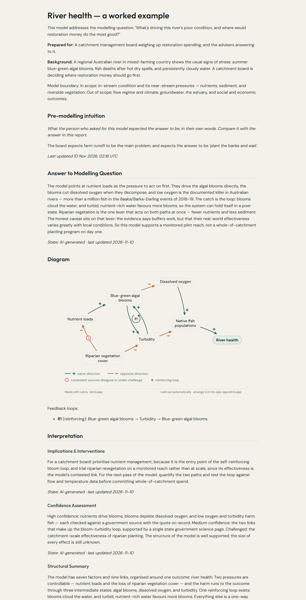

Evidence-native modelling
Causal models that hold up when someone asks "how do you know?"
Latris is a modelling workbench for work that lives or dies on a causal argument — a catchment plan, a program's logic, a risk case. Every link between factors carries its reason and its source.
AI does the drafting; you stay the approver. What comes out is a model and a report that show their work — what each arrow rests on, what was checked against the source, and what stays contested.
Latris is open — sign in with your email at the link above, no invite needed. Questions first? Get in touch.
Runs in any modern browser — nothing to install.

The actual figure from the river-health example below — every arrow links to its evidence.
A real model, not a demo
See it on a real question.
Is this river getting sick — and where would restoration money do the most good? This model, a causal loop diagram of an Australian river, is built entirely in Latris from public sources: the national State of the Environment report and the published literature on riverside vegetation.
Click any arrow in the live model and you get its reason, its source, and the exact quote the source was checked against. One of the arrows is openly challenged — the caveat sits on the record next to its evidence, because that's what a defensible model looks like.
Opens in the Latris app. No account needed to read it.

The report the model generates — answer first, then the diagram, then the evidence, including the quote each source was checked against.
I'm Shannon Bengtson. I build Latris, and I use it.
I work on causal modelling in the environment, water and policy space — the kind of project where a catchment board or a client asks how do you know?, and "trust me" isn't an answer. I've watched careful reasoning get lost too many times: a model built in a hurry, the evidence scattered across documents, and six months later nobody can say why a particular arrow is on the page.
Latris is my attempt to fix that. The structure and the evidence stay together from the first sketch, AI does the drafting, and a person keeps the pen — so the result survives the meeting where it gets interrogated, and it still makes sense to whoever inherits it later.
Work with me
I take on a small number of modelling engagements. A scoped pilot with your team: we pick one live question, build the model together in Latris, and you keep both the report and the model itself. If you're weighing a question that needs a defensible answer, get in touch — tell me what you're working on and I'll tell you honestly whether Latris fits.
Most of the reasoning never makes it into the model.
The diagram is the easy part. The work that takes the time — and the part that decides whether anyone trusts the result — is everything behind it: the evidence for each link, what you considered and ruled out, the assumptions you'd have to defend in a meeting. That usually lives across five tools, or in your head, and six months later nobody can say why a particular arrow is on the page.
AI has made this sharper, not softer. When a model takes an afternoon to generate, every relationship needs a reason to exist. Latris records the reason when the arrow is drawn — and keeps the disagreement on the record when there is one.
Who it's for
People who have to defend the reasoning.
Consultants, researchers and in-house teams working on causal questions where the report will be read by someone whose job is to ask hard questions — a board, a reviewer, an auditor.
Environment, water & policy
Catchments & ecosystems
What's driving change in a river or ecosystem — and which interventions actually move it?
Programs & policy
The causal logic behind a program or policy, made explicit, sourced, and reviewable.
Public health & wellbeing
Mapping the causes behind an outcome to target where action will help most.
Risk & safety
Natural hazards & risk
How the factors behind a hazard combine, and where the risk is most sensitive.
Safety & assurance
Claims and evidence laid out so a reviewer or regulator can follow — and challenge — every step.
System dynamics is the deepest capability: stocks and flows with unit-checked equations and delays, scenarios, Monte Carlo uncertainty, sensitivity, and per-step loop dominance (the Loops That Matter method) — every parameter carrying where it came from. It runs in the open-source engine and CLI today; the visual stock-and-flow editor in the app is on the way.
Bayesian networks: set states and probability tables, click a node to enter evidence, and watch beliefs update across the network — with soft evidence, most-likely explanations, and how sure a probability is when the tables are estimates. Not sure which formalism fits your question? Which model should you build? walks the five by the question each one answers.
Don't see your field? If your reasoning is causal, it probably fits — get in touch and tell me what you're working on.
Why Latris
Every arrow carries its evidence
Each link holds its reason and its sources. When someone asks "why is this here?", the answer is a click away — not a memory.
One model, three outputs
The same versioned model makes the diagram, the sourced written report, and the plain-language walkthrough for the person who just wants the why.
AI drafts, you approve
Agents propose structure, checks and prose; nothing enters the model until a person approves it. Every proposal and approval stays on the record.
Made to be handed over.
Findings that travel
Most modelling tools assume you'll be standing next to the screen, explaining your thinking. Latris assumes you won't be. The report is written to be read without you in the room — and every claim in it traces back to the model and the evidence behind it.
Board-ready diagram
Typeset and evidence-aware: solid lines for established links, dashed for the ones still argued.
Sourced report
The written case, with every claim tied to its evidence — as a hosted page or in Word.
Plain-language story
A walkthrough for the stakeholder who just needs the "why" — no jargon, no prior knowledge assumed.
One model, three audiences — all from the same source of truth.
For the people who own the decision
You sign off the model. You should be able to read it.
If you commission, sign off, or inherit model-backed work, you carry the risk without having built the thing. Latris answers the questions that actually matter at sign-off: what assumptions drove this result, who changed what and when, which version backed the decision, and whether another team could pick it up in eighteen months. The full history is kept automatically — the model becomes the institutional memory around the analysis, not just the drawing.
Open core
Built on an open backend.
The modelling engine behind Latris is open source (Apache-2.0) — a deterministic, git-native CLI and Python library designed to be driven from a terminal or by an agent. The hosted app runs the same engine underneath: same schema, same history, same analyses.
What you get where. The open-source library
(pip install latris) is the engine and CLI: every
analysis, a Markdown report with a diagram sketch, and
latris link. The Latris app (free account, nothing to
install) adds the hosted interactive report — the typeset figure,
result charts and interpretation that a board actually reads — the
visual editor, Word reports, review packs, the scrollytelling
story, and saved models with short links.
Working with an AI assistant? It can drive the whole CLI with no API key — your agent drafts, you approve, every step stays on the record. Agents start at llms.txt, which maps the documentation and the working rules.
pip install "latris[data,quant]"
Methods
Standing on established ground.
Latris doesn't invent its methods — it implements established ones and cites them. Causal-loop analysis works in the system-dynamics tradition of Forrester, Sterman and Meadows; causal identification on a DAG follows Pearl — d-separation and backdoor adjustment, honestly labelled as identification, not claimed causal estimation; Bayesian networks trace to Pearl (1988) and Fenton and Neil's work on defensible, expert-elicited models; fuzzy cognitive maps to Kosko; loop dominance uses the peer-reviewed Loops That Matter method; and the evidence discipline — every claim checked against its source, disagreement kept on the record — stands in the line of Toulmin's argumentation and Bradford Hill's evidence standards.
A work is cited only where Latris actually implements it, with the limits stated next to the results. The full account — with references — is in the methods and foundations reference, and every report carries a methods section generated from the same source of truth.
Tell me what you're building
Latris is open — sign in and start modelling, no invite needed. If you want to flag what you're working on or hear about new releases, leave your email below.
No spam — occasional release notes only. Prefer a direct line? hello@latris.app or LinkedIn.